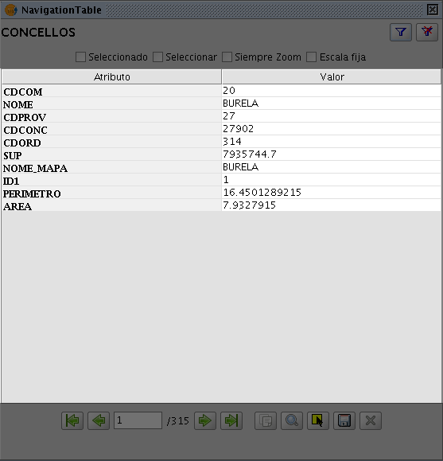

java.awt.Component
java.awt.Container
javax.swing.JComponent
javax.swing.JPanel
es.udc.cartolab.gvsig.navtable.AbstractNavTable
es.udc.cartolab.gvsig.navtable.NavTable
java.awt.Component
java.awt.Container
javax.swing.JComponent
javax.swing.JPanel
es.udc.cartolab.gvsig.navtable.AbstractNavTable
es.udc.cartolab.gvsig.navtable.NavTable
|
|||||||||
| PREV CLASS NEXT CLASS | FRAMES NO FRAMES | ||||||||
| SUMMARY: NESTED | FIELD | CONSTR | METHOD | DETAIL: FIELD | CONSTR | METHOD | ||||||||
java.lang.Object
public class NavTable
NavTable's main panel is a two-column table that shows data row of the layer. The first column contains the attributes names and the second one contais its values.
NOTE: the data table is the original data storage, not the table to be shown in this window.
| Nested Class Summary |
|---|
| Nested classes/interfaces inherited from class javax.swing.JPanel |
|---|
javax.swing.JPanel.AccessibleJPanel |
| Nested classes/interfaces inherited from class javax.swing.JComponent |
|---|
javax.swing.JComponent.AccessibleJComponent |
| Nested classes/interfaces inherited from class java.awt.Container |
|---|
java.awt.Container.AccessibleAWTContainer |
| Nested classes/interfaces inherited from class java.awt.Component |
|---|
java.awt.Component.AccessibleAWTComponent, java.awt.Component.BltBufferStrategy, java.awt.Component.FlipBufferStrategy |
| Field Summary | |
|---|---|
protected com.iver.andami.ui.mdiManager.WindowInfo |
viewInfo
|
| Fields inherited from class es.udc.cartolab.gvsig.navtable.AbstractNavTable |
|---|
alwaysSelectCB, alwaysZoomCB, beforeB, cancelB, centerPanel, currentPosition, filterB, firstB, fixScaleCB, lastB, layer, nextB, noFilterB, northPanel, onlySelectedCB, posTF, previousCopyB, recordset, saveB, selectionB, southPanel, totalLabel, zoomB |
| Fields inherited from class javax.swing.JComponent |
|---|
accessibleContext, listenerList, TOOL_TIP_TEXT_KEY, ui, UNDEFINED_CONDITION, WHEN_ANCESTOR_OF_FOCUSED_COMPONENT, WHEN_FOCUSED, WHEN_IN_FOCUSED_WINDOW |
| Fields inherited from class java.awt.Component |
|---|
BOTTOM_ALIGNMENT, CENTER_ALIGNMENT, LEFT_ALIGNMENT, RIGHT_ALIGNMENT, TOP_ALIGNMENT |
| Fields inherited from interface java.awt.image.ImageObserver |
|---|
ABORT, ALLBITS, ERROR, FRAMEBITS, HEIGHT, PROPERTIES, SOMEBITS, WIDTH |
| Constructor Summary | |
|---|---|
NavTable(com.iver.cit.gvsig.fmap.layers.FLyrVect layer)
|
|
| Method Summary | |
|---|---|
protected void |
before()
Goes to the previous row of the data. |
protected void |
fillValues(long rowPosition)
It shows the values of a data row in the main panel. |
protected void |
first()
Goes to the first row of the data. |
protected javax.swing.JPanel |
getCenterPanel()
It creates a panel with a table that shows the data linked to a feature of the layer. |
boolean |
init()
It initializes the window. |
protected void |
last()
Goes to the last row of the data. |
protected void |
next()
Goes to the next row of the data. |
protected void |
saveRegister()
Saves the changes of the current data row. |
| Methods inherited from class es.udc.cartolab.gvsig.navtable.AbstractNavTable |
|---|
actionPerformed, beforeSelected, getNorthPanel, getSouthPanel, getWindowInfo, nextSelected, refreshGUI |
| Methods inherited from class javax.swing.JPanel |
|---|
getAccessibleContext, getUI, getUIClassID, paramString, setUI, updateUI |
| Methods inherited from class javax.swing.JComponent |
|---|
addAncestorListener, addNotify, addVetoableChangeListener, computeVisibleRect, contains, createToolTip, disable, enable, firePropertyChange, firePropertyChange, firePropertyChange, fireVetoableChange, getActionForKeyStroke, getActionMap, getAlignmentX, getAlignmentY, getAncestorListeners, getAutoscrolls, getBorder, getBounds, getClientProperty, getComponentGraphics, getComponentPopupMenu, getConditionForKeyStroke, getDebugGraphicsOptions, getDefaultLocale, getFontMetrics, getGraphics, getHeight, getInheritsPopupMenu, getInputMap, getInputMap, getInputVerifier, getInsets, getInsets, getListeners, getLocation, getMaximumSize, getMinimumSize, getNextFocusableComponent, getPopupLocation, getPreferredSize, getRegisteredKeyStrokes, getRootPane, getSize, getToolTipLocation, getToolTipText, getToolTipText, getTopLevelAncestor, getTransferHandler, getVerifyInputWhenFocusTarget, getVetoableChangeListeners, getVisibleRect, getWidth, getX, getY, grabFocus, isDoubleBuffered, isLightweightComponent, isManagingFocus, isOpaque, isOptimizedDrawingEnabled, isPaintingTile, isRequestFocusEnabled, isValidateRoot, paint, paintBorder, paintChildren, paintComponent, paintImmediately, paintImmediately, print, printAll, printBorder, printChildren, printComponent, processComponentKeyEvent, processKeyBinding, processKeyEvent, processMouseEvent, processMouseMotionEvent, putClientProperty, registerKeyboardAction, registerKeyboardAction, removeAncestorListener, removeNotify, removeVetoableChangeListener, repaint, repaint, requestDefaultFocus, requestFocus, requestFocus, requestFocusInWindow, requestFocusInWindow, resetKeyboardActions, reshape, revalidate, scrollRectToVisible, setActionMap, setAlignmentX, setAlignmentY, setAutoscrolls, setBackground, setBorder, setComponentPopupMenu, setDebugGraphicsOptions, setDefaultLocale, setDoubleBuffered, setEnabled, setFocusTraversalKeys, setFont, setForeground, setInheritsPopupMenu, setInputMap, setInputVerifier, setMaximumSize, setMinimumSize, setNextFocusableComponent, setOpaque, setPreferredSize, setRequestFocusEnabled, setToolTipText, setTransferHandler, setUI, setVerifyInputWhenFocusTarget, setVisible, unregisterKeyboardAction, update |
| Methods inherited from class java.awt.Container |
|---|
add, add, add, add, add, addContainerListener, addImpl, addPropertyChangeListener, addPropertyChangeListener, applyComponentOrientation, areFocusTraversalKeysSet, countComponents, deliverEvent, doLayout, findComponentAt, findComponentAt, getComponent, getComponentAt, getComponentAt, getComponentCount, getComponents, getComponentZOrder, getContainerListeners, getFocusTraversalKeys, getFocusTraversalPolicy, getLayout, getMousePosition, insets, invalidate, isAncestorOf, isFocusCycleRoot, isFocusCycleRoot, isFocusTraversalPolicyProvider, isFocusTraversalPolicySet, layout, list, list, locate, minimumSize, paintComponents, preferredSize, printComponents, processContainerEvent, processEvent, remove, remove, removeAll, removeContainerListener, setComponentZOrder, setFocusCycleRoot, setFocusTraversalPolicy, setFocusTraversalPolicyProvider, setLayout, transferFocusBackward, transferFocusDownCycle, validate, validateTree |
| Methods inherited from class java.awt.Component |
|---|
action, add, addComponentListener, addFocusListener, addHierarchyBoundsListener, addHierarchyListener, addInputMethodListener, addKeyListener, addMouseListener, addMouseMotionListener, addMouseWheelListener, bounds, checkImage, checkImage, coalesceEvents, contains, createImage, createImage, createVolatileImage, createVolatileImage, disableEvents, dispatchEvent, enable, enableEvents, enableInputMethods, firePropertyChange, firePropertyChange, firePropertyChange, firePropertyChange, firePropertyChange, firePropertyChange, getBackground, getBounds, getColorModel, getComponentListeners, getComponentOrientation, getCursor, getDropTarget, getFocusCycleRootAncestor, getFocusListeners, getFocusTraversalKeysEnabled, getFont, getForeground, getGraphicsConfiguration, getHierarchyBoundsListeners, getHierarchyListeners, getIgnoreRepaint, getInputContext, getInputMethodListeners, getInputMethodRequests, getKeyListeners, getLocale, getLocation, getLocationOnScreen, getMouseListeners, getMouseMotionListeners, getMousePosition, getMouseWheelListeners, getName, getParent, getPeer, getPropertyChangeListeners, getPropertyChangeListeners, getSize, getToolkit, getTreeLock, gotFocus, handleEvent, hasFocus, hide, imageUpdate, inside, isBackgroundSet, isCursorSet, isDisplayable, isEnabled, isFocusable, isFocusOwner, isFocusTraversable, isFontSet, isForegroundSet, isLightweight, isMaximumSizeSet, isMinimumSizeSet, isPreferredSizeSet, isShowing, isValid, isVisible, keyDown, keyUp, list, list, list, location, lostFocus, mouseDown, mouseDrag, mouseEnter, mouseExit, mouseMove, mouseUp, move, nextFocus, paintAll, postEvent, prepareImage, prepareImage, processComponentEvent, processFocusEvent, processHierarchyBoundsEvent, processHierarchyEvent, processInputMethodEvent, processMouseWheelEvent, remove, removeComponentListener, removeFocusListener, removeHierarchyBoundsListener, removeHierarchyListener, removeInputMethodListener, removeKeyListener, removeMouseListener, removeMouseMotionListener, removeMouseWheelListener, removePropertyChangeListener, removePropertyChangeListener, repaint, repaint, repaint, resize, resize, setBounds, setBounds, setComponentOrientation, setCursor, setDropTarget, setFocusable, setFocusTraversalKeysEnabled, setIgnoreRepaint, setLocale, setLocation, setLocation, setName, setSize, setSize, show, show, size, toString, transferFocus, transferFocusUpCycle |
| Methods inherited from class java.lang.Object |
|---|
clone, equals, finalize, getClass, hashCode, notify, notifyAll, wait, wait, wait |
| Field Detail |
|---|
protected com.iver.andami.ui.mdiManager.WindowInfo viewInfo
| Constructor Detail |
|---|
public NavTable(com.iver.cit.gvsig.fmap.layers.FLyrVect layer)
| Method Detail |
|---|
protected javax.swing.JPanel getCenterPanel()
getCenterPanel in class AbstractNavTablepublic boolean init()
AbstractNavTable
init in class AbstractNavTableprotected void fillValues(long rowPosition)
AbstractNavTable
fillValues in class AbstractNavTablerowPosition - the row of the data to be shown.protected void saveRegister()
AbstractNavTable
saveRegister in class AbstractNavTableprotected void next()
AbstractNavTable
next in class AbstractNavTableprotected void before()
AbstractNavTable
before in class AbstractNavTableprotected void last()
AbstractNavTable
last in class AbstractNavTableprotected void first()
AbstractNavTable
first in class AbstractNavTable
|
|||||||||
| PREV CLASS NEXT CLASS | FRAMES NO FRAMES | ||||||||
| SUMMARY: NESTED | FIELD | CONSTR | METHOD | DETAIL: FIELD | CONSTR | METHOD | ||||||||